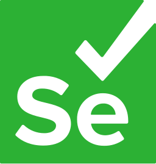
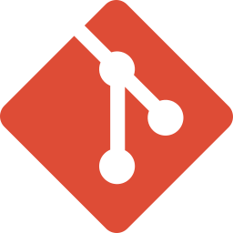

I build software that reads messy things, like receipts, tax law, comment sections, web pages and a technician’s field notes, and turns them into data you can check.
Software engineer in Bangalore with 1.5+ years building backend services, data pipelines and LLM applications for fintech, healthcare and security clients.
Open to software and AI engineering roles.
One input from each project, and what comes out
fairshare / extract.json
Projects
Each one puts a model where it helps, extracting, drafting or summarising, and wraps it in plain, testable checks so the result can be trusted. Open one to see how it works and what it’s built with.
-
 SolarOps
Job tracking for companies that maintain solar installations. A local LLM drafts jobs from customer emails and service reports from field notes, and a person approves each one.
SolarOps
Job tracking for companies that maintain solar installations. A local LLM drafts jobs from customer emails and service reports from field notes, and a person approves each one.
 FastAPI
FastAPI React 19
React 19 PostgreSQL
PostgreSQL Ollama
How it works and what it’s built with
Ollama
How it works and what it’s built with
-
 Gleaner
A web-scraping platform that tracks every change in the data, alerts on the ones that matter, and only crawls approved sites politely.
FastAPI
Gleaner
A web-scraping platform that tracks every change in the data, alerts on the ones that matter, and only crawls approved sites politely.
FastAPI PlaywrightReact 19Ollama
How it works and what it’s built with
PlaywrightReact 19Ollama
How it works and what it’s built with
-
 FairShare
Photograph an invoice or receipt and OCR plus an LLM pull out every line item. Track what’s unpaid, and split shared bills item by item, exact to the cent.
FlaskEasyOCR
FairShare
Photograph an invoice or receipt and OCR plus an LLM pull out every line item. Track what’s unpaid, and split shared bills item by item, exact to the cent.
FlaskEasyOCR OpenAI APIReact
How it works and what it’s built with
OpenAI APIReact
How it works and what it’s built with
-
 SA Tax Bot
A chatbot for South Africa’s Income Tax Act. A local model answers from retrieved passages, and every point links to the exact lines it came from.
Flask
SA Tax Bot
A chatbot for South Africa’s Income Tax Act. A local model answers from retrieved passages, and every point links to the exact lines it came from.
Flask ChromaDB
ChromaDB Hugging FaceLoRA
How it works and what it’s built with
Hugging FaceLoRA
How it works and what it’s built with
-
 YT Analyzer
What a video’s comment section actually thinks: sentiment, summaries, advice for the creator and a chat over the comments, all on local models.
FastAPIMistral 7BFAISSReact
How it works and what it’s built with
YT Analyzer
What a video’s comment section actually thinks: sentiment, summaries, advice for the creator and a chat over the comments, all on local models.
FastAPIMistral 7BFAISSReact
How it works and what it’s built with
Experience
Backend, data and AI work for clients in fintech, healthcare and security, from an internship to independent consulting.
~1 hr to <5 min
Therapist report analysis at Fischer Jordan, after LLM-based behavioural analysis and query routing.
4–5 days to 1–2 hrs
Data-entry turnaround at Fischer Jordan, after scraping and LLM extraction pipelines.
-
NNInfosec
Independent consultant, software development
Jun 2026 to present
Built a governance, risk and compliance platform from a formal specification, plus a threat-intelligence automation service, working alone across backend, frontend and deployment.
- REST and GraphQL APIs in FastAPI and PostgreSQL, with JWT and MFA sign-in, role-based access, audit logging and database migrations.
- CSV and Excel bulk imports with per-row validation, and a React and TypeScript admin dashboard for compliance reporting.
- A Python service that pulls attacker IPs from CrowdStrike Falcon NGSIEM and VirusTotal, scores each one and keeps a blocklist up to date, running unattended as a Windows service.
-
Vault22
Independent consultant, software development
Mar 2026 to Jun 2026
Shipped production features for a multi-tenant wealth management platform, across its .NET 9 API and React dashboard, in an agile team.
- Backend services in C# with MediatR CQRS handlers, EF Core migrations and PostgreSQL across several financial modules.
- Sign-in through OAuth2 and JWT with Azure Entra ID and a one-time-token SSO flow, with tenant-scoped roles and structured audit logging.
- React admin dashboards with server-side filtering, paginated grids, role-based access and per-tab session isolation.
-
Fischer Jordan
Data analyst, intern then full time
Mar 2025 to Apr 2026
Joined as an intern and moved to a full-time role after four months, delivering several client projects at once in finance and healthcare.
- LLM-based behavioural analysis and query routing that cut therapist report analysis from about an hour to under five minutes.
- Scraping and LLM extraction pipelines with Selenium, BeautifulSoup and Gemini that cut data-entry turnaround from 4–5 days to 1–2 hours.
- An enterprise RAG chatbot in PyTorch, FAISS and FastAPI that turns documents in many formats into a searchable knowledge base.
- Low-latency trading and market-data automation on AWS EC2, Lambda and EventBridge with AsyncIO and PostgreSQL.
-
SnapitAI
Software developer intern
Oct 2024 to Dec 2024
Built and deployed a Flutter app with an LLM chatbot.
- Integrated SERP and Llama LLM APIs to pull Google-services data and power context-aware chat, deployed on Azure virtual machines.
Skills
What I use at work and in the projects above.
Languages
 Python
Python- SQL
 TypeScript
TypeScript- C#
Backend
- FastAPI
- Flask
- .NET 9
 GraphQL
GraphQL- PostgreSQL
 MySQL
MySQL- SQLite
- JWT and OAuth2
AI and ML
 PyTorch
PyTorch TensorFlow
TensorFlow- Hugging Face
- Ollama
- OpenAI API
 Gemini API
Gemini API- ChromaDB
- FAISS
- RAG
- LoRA and PEFT
- OpenCV
- EasyOCR
Data
- Pandas
- NumPy
- Power BI
- ETL pipelines

Selenium- BeautifulSoup
Frontend
- React
- TypeScript
- Vite
- Tailwind CSS
 Flutter
Flutter
Cloud and tools
- AWS
 Azure
Azure Docker
Docker
Git Linux
Linux- Playwright
About
I’m a software engineer in Bangalore. I like taking a messy, real-world input and building the whole path from it to something reliable: the extraction, the checks, the interface and the deployment. Every project here runs with one Docker command on Windows or macOS.
Education
Vellore Institute of Technology, Chennai, Sep 2021 to Jul 2025
B.Tech in Computer Science and Engineering, specialising in Artificial Intelligence and Machine Learning. CGPA 8.08.
I’m open to software and AI engineering roles. If you’re working on something interesting, I’d like to hear about it.